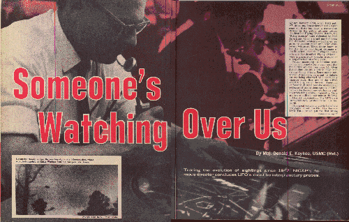

À partir de , lorsque True publia mon premier article sur les ovnis, il y eut un énorme changement dans l'attitude du public face aux Objets Volants Non Identifiés. Auparavant, les "soucoupes volantes" étaient ridiculisées par la plupart des Américains. Seul un petit nombre connaissait l'évidence dramatique - des rapports confirmés par des pilotes vétérans et d'autres témoins compétents. Un plus petit nombre encore connaissaient l'Estimation Top Secrète de la Situation par l'Air Force - que les soucoupes volantes - officiellement Objets Volants Non Identifiés - étaient des véhicules interplanétaires engagés dans une longue observation de la Terre.
Aujourd'hui, d'après des sondages nationaux, la moitié de notre population est convaincue de la réalité des ovnis [voir 5 millions d'americains peuvent-ils se tromper ? par George Gallup, sondage réalisé en 1966]. Plus de 5 millions de personnes déclarent avoir vu d'étranges objets volants. Certains américains récemment convaincus, peu enclins à croire que nous sommes observés par une race techniquement supérieure, demandent d'abord si les ovnis ne sont pas des appareils hautement secrets - américain ou russes. Mais les preuves en quantité de masse des vitesses énormes et de manœuvres dépassant de loin tout appareil fait sur Terre ont démontré que cette réponse était impossible. De plus en plus de millions acceptent aujourd'hui l'explication de l'AF longtemps cachée : les ovnis sont des sondes interplanétaires d'un autre monde.
Ce grand revirement dans la croyance populaire n'est pas arrivé soudainement. L'article de True de Janvier 1950 a mis le projecteur sur les ovnis, et des centaines de témoins ont signalé les observations qu'ils avaient gardées pour eux par peur du ridicule.
En , une manifestation soudaine d'observations d'ovnis fit la Une des actualités, avec des centaines de rapports vérifiés de la part de pilotes militaires et civils, d'opérateurs de tour de contrôle, d'experts en suivi radar, et d'autres observateurs.
Début 1953, un groupe d'officiers du renseignement de l'AF lié au projet UFO projeta de publier les cas les plus déroutants, ainsi que des photographies inexpliquées d'ovnis. Aucune conclusion finale ne devait être émise, bien que les éléments publiés suggèrent fortement la réponse interplanétaire. Mais au dernier moment, les peurs de responsables de haut rang amenèrent le plan à être avorté. Le Withholding of UFO reports and "explanations" to prevent public excitement steadily increased.
Despite this, many military reports leaked out because the pilots and others involved opposed this cover-up as a bad policy. In addition to UFO operations over the United States, thousands of similar reports came to light in foreign countries.
En Novembre 1957, another outbreak of sightings further strained official withholding efforts, as a number of "touchdown" landings occurred in this country and abroad.
Cette même année, des enquêtes furent démarées par le NICAP, un groupe privé à la recherche de faits dont le Q.-G. est à Washington D.C. En tant que directeur du NICAP, je l'ai vu grandir en une organisation puissante, reconnue comme le plus grand groupe de recherche scientifique sur les ovnis dans le monde, après plus de 12000 membres. Le NICAP avait près de 300 conseillers scientifiques et techniques, ainsi que des consultants spéciaux en opérations spatiales, astronomie, communications, et autres domaines liés aux enquêtes sur les ovnis.
En raison de ses évaluation sérieuses et approfondies, et de ses efforts déterminés pour exposer les nombreuses fraudes, personnes opportunistes et trompées répandant des contes sauvages sur les ovnis, le NICAP est aujourd'hui accepté comme la plus haute autorité privée sur les ovnis dans le monde. Nos rapports documentés au Congrès et à la presse ont joué un rôle majeur dans la diffusion publique de faits cachés.
Après le fiasco du gaz des marais
au Printemps 1966, des millions de
citoyens commencèrent à rejeter les explications sur les ovnis de l'AF. De hauts responsables, croyant toujours
honnêtement que éluder les explications d'observations était la politique la plus sûre pour le pays, furent pris sous
des feux peu enviables.
La résultat fut une décision de disposer d'une investigation scientifique indépendante - avec les responsables d'accords pour une politique de "carte blanche". L'Université du Colorado fut choisie, et un certain nombre d'observations récentes has already had on-the-scene investigations by one or more scientists from the Colorado project.
Avant même que le projet commence ses opérations, le NICAP joua un rôle vital, à la demande du docteur Edward Condon, directeur du projet, et de ses collègues scientifiques. En plus de conseiller sur les enquêtes sur le terrain et les évaluations, le NICAP a rendu accessibles plusieurs centaines de rapports vérifiés, dont de nombreuses reproductions de cas des archives de l'AF.
Le résultat, c'est que le Projet Colorado a ajouté aux espoirs du NICAP pour un rapport honnête et impartial au public. Bien qu'il ne soit pas attendu avant la fin du Printemps - et plus de temps pourrait être demandé - la pression du public pour l'ensemble des réponses possibles augmente rapidement.
Avec au moins la moitié du pays aujourd'hui fortement intéressé, il est maintenant plus important que jamais de ré-éxaminer les premiers cas les plus solides, rechercher les indices peut-être survolés. Il est également extrêmement important que les témoins d'observations enregistrent leurs signalements, pour aider à compléter l'image et aussi pour aider le ridicule déjà en baisse. J'incite chaque personne disposant d'informations factuelles sur une observation d'ovni à m'en signaler les the details au NICAP, 1536 Connecticut Avenue, Washington, D.C. 20036. Si vous le souhaitez, nous garderons votre nom confidentiel.